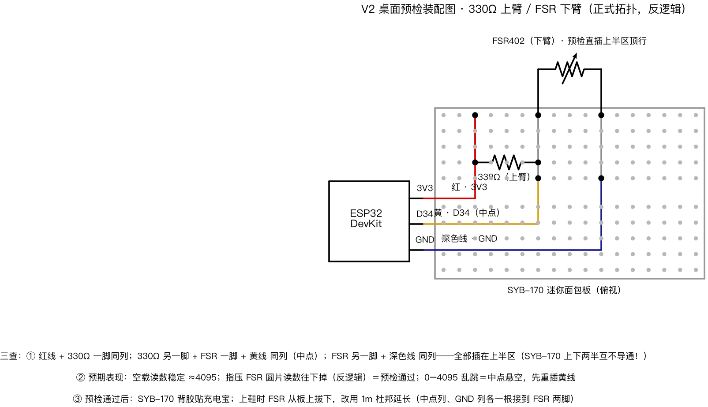

V2 桌面预检装配图 · 330Ω 上臂 / FSR 下臂（正式拓扑，反逻辑）

三查（插完先别上电，照图核一遍）
① 同列才导通：红线 + 330Ω 一脚同列；330Ω 另一脚 + FSR 一脚 + 黄线 同列（中点）；FSR 另一脚 + 深色线 同列——全部插在上半区（SYB-170 上下两半互不导通！）
② 上电预期：空载读数稳定 ≈4095；指压 FSR 圆片读数往下掉（反逻辑，对照预习课 §3 数值表）＝预检通过；0–4095 乱跳＝中点悬空，先重插黄线
③ 预检通过后：SYB-170 背胶贴充电宝；上鞋时 FSR 从板上拔下，改用 1m 杜邦延长（中点列、GND 列各一根接到 FSR 两脚）
看波形：python3 plot_fsr_web.py → 浏览器 http://localhost:8324/（5 秒滚动窗）